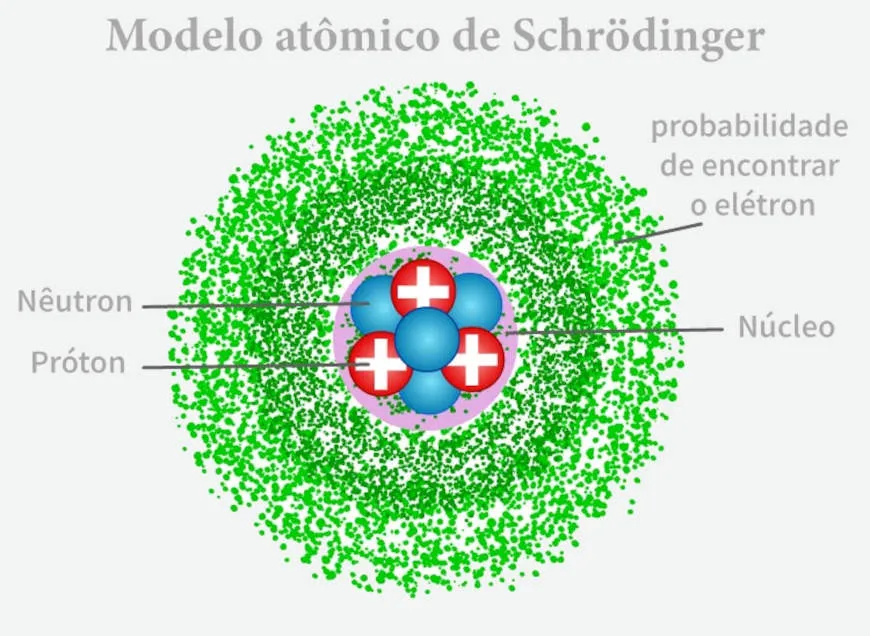

Modelos Atômicos
Tudo o que conhecemos como matéria é constituído por partículas microscópicas. Entre essas partículas estão os átomos, unidades fundamentais que participam da formação dos elementos químicos e das substâncias. Embora sejam extremamente pequenos, os átomos possuem uma estrutura interna e apresentam comportamentos que podem ser investigados cientificamente.
Ao longo da história, diferentes cientistas propuseram explicações para a estrutura dos átomos. Essas explicações são chamadas de modelos atômicos. Cada modelo foi desenvolvido com base nos conhecimentos e nas evidências experimentais disponíveis em sua época, contribuindo para aperfeiçoar a compreensão da matéria.
Os principais modelos estudados no Ensino Médio são os de Dalton, Thomson, Rutherford e Bohr. A evolução dessas ideias mostra como a ciência modifica suas explicações quando novas observações revelam limitações nos modelos anteriores.
O que é um modelo atômico?
Um modelo atômico é uma representação teórica utilizada para explicar a estrutura e o comportamento dos átomos. Como não podemos observar diretamente todos os detalhes de um átomo a olho nu, os cientistas utilizam experimentos, cálculos e representações para investigar suas características.
Um modelo científico não precisa representar perfeitamente a realidade em todos os seus aspectos. Ele deve explicar as evidências conhecidas e permitir previsões que possam ser testadas. Quando novas descobertas mostram que determinadas explicações são insuficientes, o modelo pode ser aperfeiçoado ou substituído por outro mais adequado.
Por exemplo, o modelo de Dalton descrevia o átomo como uma esfera maciça e indivisível. Posteriormente, a descoberta do elétron demonstrou que o átomo possuía componentes menores, levando ao desenvolvimento do modelo de Thomson. Mais tarde, experimentos com partículas alfa revelaram a existência de um núcleo atômico, contribuindo para o modelo de Rutherford.
As primeiras ideias sobre o átomo
Antes do desenvolvimento dos modelos científicos modernos, filósofos da Grécia Antiga já discutiam a composição da matéria. Leucipo e Demócrito defenderam a ideia de que a matéria poderia ser constituída por partículas extremamente pequenas e indivisíveis, às quais deram o nome de átomos. A palavra tem origem no termo grego átomos, associado à ideia de algo que não pode ser dividido.
Essas ideias eram filosóficas e não estavam fundamentadas nos experimentos que seriam realizados séculos depois. Ainda assim, ajudaram a estabelecer uma questão importante: a matéria seria contínua ou formada por partículas?
Foi somente no início do século XIX que John Dalton desenvolveu uma teoria atômica baseada em observações e leis químicas. A partir daí, os modelos atômicos passaram a evoluir acompanhando o avanço experimental da ciência.
Modelo atômico de Dalton (1808)
O cientista inglês John Dalton propôs um modelo no qual o átomo era considerado uma esfera maciça, indivisível e indestrutível. Nesse modelo, os átomos não possuíam estrutura interna conhecida e eram as unidades básicas que constituíam os elementos químicos.
O modelo ficou conhecido como modelo da bola de bilhar, pois representava o átomo como uma pequena esfera sólida, semelhante a uma bola utilizada nesse jogo.
Dalton desenvolveu sua teoria para explicar regularidades observadas nas reações químicas, especialmente as relações entre as massas das substâncias que participam dessas reações.
Principais características
- O átomo era considerado uma esfera maciça.
- Era considerado indivisível e indestrutível nas transformações químicas comuns.
- Átomos de um mesmo elemento eram considerados iguais entre si, inclusive em massa.
- Átomos de elementos diferentes apresentavam massas e propriedades diferentes.
- As substâncias compostas eram formadas pela combinação de átomos de diferentes elementos em proporções definidas.
- Nas reações químicas, os átomos se reorganizavam para formar novas substâncias.
Uma consequência importante dessa teoria é que as reações químicas poderiam ser compreendidas como reorganizações de átomos, e não como o desaparecimento de toda a matéria inicial.
Limitações do modelo de Dalton
Com o avanço da ciência, descobriu-se que o átomo não é indivisível. Ele possui partículas menores, como prótons, nêutrons e elétrons. Também se verificou que átomos de um mesmo elemento podem apresentar massas diferentes, como ocorre com os isótopos.
Essas descobertas demonstraram que o modelo de Dalton, embora importante para a história da Química, não explicava toda a estrutura da matéria.
Modelo atômico de Thomson (final do século XIX)
No final do século XIX, experimentos com tubos de descarga elétrica, conhecidos como tubos de raios catódicos, permitiram investigar a natureza elétrica da matéria. Esses experimentos contribuíram para que o físico britânico Joseph John Thomson identificasse o elétron em 1897.
O elétron é uma partícula subatômica que possui carga elétrica negativa. Sua descoberta demonstrou que o átomo apresentava componentes menores e, portanto, não poderia ser considerado uma esfera indivisível, como propunha Dalton.
Thomson desenvolveu um novo modelo atômico no qual o átomo era representado como uma região de carga positiva com elétrons de carga negativa distribuídos em seu interior.
Esse modelo ficou conhecido como modelo do pudim de passas. A comparação é feita porque a carga positiva seria semelhante à massa de um pudim, enquanto os elétrons estariam distribuídos nela como passas.
Principais características
- O átomo possuía estrutura interna.
- Os elétrons apresentavam carga elétrica negativa.
- A carga positiva estava distribuída pelo volume do átomo.
- Os elétrons estavam distribuídos no interior da região positiva.
- O átomo, em seu estado neutro, apresentava equilíbrio entre as cargas positivas e negativas.
A descoberta do elétron foi fundamental para o desenvolvimento da Física e da Química, pois revelou que a matéria possuía uma estrutura mais complexa do que se imaginava anteriormente.
Limitações do modelo de Thomson
O modelo de Thomson não explicava adequadamente como a carga positiva estava organizada no átomo nem os resultados de experimentos posteriores que investigaram a passagem de partículas através da matéria.
Em especial, experimentos com partículas alfa demonstraram que a carga positiva e a maior parte da massa do átomo estavam concentradas em uma região muito pequena, o núcleo atômico. Essa descoberta levou ao desenvolvimento do modelo de Rutherford.
Modelo atômico de Rutherford (1911)
O físico Ernest Rutherford, com a participação experimental de Hans Geiger e Ernest Marsden, investigou o comportamento de partículas alfa lançadas contra uma folha muito fina de ouro.
As partículas alfa possuem carga elétrica positiva. De acordo com o modelo de Thomson, esperava-se que a distribuição da carga positiva pelo átomo provocasse apenas pequenos desvios nessas partículas. Entretanto, os resultados apresentaram um comportamento surpreendente.
A maioria das partículas alfa atravessou a folha de ouro sem sofrer desvios significativos. Algumas sofreram desvios consideráveis, e uma quantidade muito pequena foi desviada em ângulos muito grandes ou retornou em direção à região de onde havia vindo.
Para explicar essas observações, Rutherford propôs que o átomo possuía uma região central extremamente pequena, densa e positiva, responsável pelos grandes desvios das partículas alfa. Essa região recebeu o nome de núcleo atômico.
Ao redor do núcleo estaria a eletrosfera, região associada à presença dos elétrons. O modelo também indicava que a maior parte do volume do átomo não era ocupada pelo núcleo.
Principais características
- O átomo possuía um núcleo central muito pequeno e de carga positiva.
- O núcleo concentrava praticamente toda a massa do átomo.
- Os elétrons ocupavam a região externa, chamada eletrosfera.
- A maior parte do volume atômico era espaço entre o núcleo e a região ocupada pelos elétrons.
- O átomo, em condições neutras, apresentava equilíbrio entre as cargas positivas e negativas.
O modelo de Rutherford é frequentemente comparado ao Sistema Solar: o núcleo ocupa a posição central, enquanto os elétrons são representados ao seu redor. Essa analogia ajuda a visualizar a separação entre núcleo e eletrosfera, mas não deve ser interpretada literalmente. O comportamento dos elétrons é diferente do movimento dos planetas.
Limitações do modelo de Rutherford
De acordo com a Física clássica, uma partícula eletricamente carregada em movimento acelerado deveria emitir energia. Se os elétrons se comportassem exatamente como partículas orbitando o núcleo de acordo com a Física clássica, perderiam energia e tenderiam a se aproximar dele.
Isso não explicava a estabilidade dos átomos observados na natureza. Além disso, o modelo não explicava adequadamente os espectros de luz emitidos pelos átomos, que apresentam frequências específicas.
Para resolver parte dessas dificuldades, Niels Bohr propôs uma modificação no modelo atômico, introduzindo níveis de energia permitidos para os elétrons.
Modelo atômico de Bohr (1913)
O físico dinamarquês Niels Bohr aperfeiçoou o modelo de Rutherford ao incorporar ideias da teoria quântica. Ele propôs que os elétrons poderiam ocupar determinados estados de energia permitidos, em vez de apresentar qualquer valor de energia de maneira contínua.
No modelo de Bohr, os elétrons ocupavam níveis de energia definidos, frequentemente representados no Ensino Médio como camadas eletrônicas ao redor do núcleo. Enquanto permanecessem em um desses estados permitidos, não perderiam energia continuamente da maneira prevista pela Física clássica.
Quando um elétron absorve uma quantidade adequada de energia, pode passar para um estado de energia maior. Quando retorna a um estado de energia menor, libera energia, frequentemente na forma de radiação eletromagnética, como a luz.
A diferença entre os níveis de energia determina a energia do fóton absorvido ou emitido. Essa ideia ajudou a explicar as linhas características presentes no espectro do átomo de hidrogênio.
Principais características
- Os elétrons podem ocupar níveis de energia permitidos.
- Os níveis eletrônicos apresentam energias específicas.
- Um elétron pode absorver energia e passar para um nível mais energético.
- Ao passar para um nível menos energético, o elétron pode emitir um fóton.
- As diferenças entre níveis de energia ajudam a explicar os espectros atômicos.
Absorção e emissão de energia
Imagine um elétron inicialmente em um nível de energia mais baixo. Se ele absorver um fóton com a energia adequada, poderá passar para um nível mais alto. Esse processo é chamado de absorção de energia.
Quando o elétron retorna a um nível de energia inferior, a diferença de energia pode ser liberada na forma de um fóton. Esse processo é chamado de emissão de energia.
É importante observar que o elétron não pode absorver ou emitir qualquer quantidade de energia e continuar nos mesmos estados permitidos. A energia envolvida depende da diferença entre os níveis inicial e final.
Limitações do modelo de Bohr
O modelo de Bohr explicou com sucesso aspectos importantes do espectro do hidrogênio, mas não descreveu adequadamente todos os átomos, especialmente aqueles que possuem vários elétrons.
O desenvolvimento da Mecânica Quântica permitiu construir modelos mais completos para explicar o comportamento dos elétrons. Atualmente, os elétrons não são descritos, de maneira geral, como pequenas esferas seguindo órbitas circulares fixas ao redor do núcleo.

O modelo atômico atual: modelo quântico
O modelo quântico foi desenvolvido ao longo do século XX por diversos cientistas, com contribuições importantes de Erwin Schrödinger, Werner Heisenberg e outros pesquisadores. Ele utiliza princípios da Mecânica Quântica para descrever a estrutura e o comportamento dos átomos.
Nesse modelo, os elétrons são descritos por estados quânticos. Em vez de atribuir a cada elétron uma trajetória circular fixa, utiliza-se o conceito de orbital atômico, associado à distribuição de probabilidade de encontrar um elétron em determinada região do espaço.
Os orbitais não são caminhos percorridos pelos elétrons como as órbitas planetárias. São representações matemáticas que descrevem estados eletrônicos e permitem prever propriedades dos átomos.
O núcleo é constituído por prótons, que possuem carga positiva, e nêutrons, que não possuem carga elétrica. Os elétrons possuem carga negativa e ocupam estados quânticos associados à região externa do núcleo.
O modelo quântico é essencial para explicar a organização dos elétrons, as propriedades periódicas dos elementos, as ligações químicas e muitas outras características das substâncias.
Comparação entre os modelos atômicos
| Modelo | Representação | Principal contribuição |
|---|---|---|
| Dalton | Bola de bilhar | Átomo como unidade básica da matéria, sem estrutura interna conhecida. |
| Thomson | Pudim de passas | Introdução do elétron e da estrutura elétrica do átomo. |
| Rutherford | Modelo nuclear | Identificação de um núcleo pequeno, denso e positivo. |
| Bohr | Camadas eletrônicas | Níveis de energia permitidos e transições eletrônicas. |
| Modelo quântico | Orbitais e distribuições de probabilidade | Descrição quântica dos estados eletrônicos e das propriedades atômicas. |
Por que os modelos atômicos mudaram?
A evolução dos modelos atômicos demonstra que o conhecimento científico é construído por meio da observação, da experimentação e da análise de resultados. Os cientistas não modificaram os modelos simplesmente porque preferiam outras representações, mas porque novas evidências mostraram que as explicações anteriores eram insuficientes.
A descoberta do elétron revelou que o átomo possuía estrutura interna. Os experimentos com partículas alfa indicaram a existência de um núcleo. Os estudos sobre os espectros atômicos contribuíram para o desenvolvimento do modelo de Bohr e, posteriormente, da teoria quântica.
Assim, cada modelo trouxe contribuições importantes, mesmo quando posteriormente precisou ser aperfeiçoado. Compreender suas diferenças permite entender não apenas a estrutura da matéria, mas também como o conhecimento científico evolui.
Resumo do conteúdo
- Dalton: átomo como esfera maciça e indivisível.
- Thomson: átomo com elétrons negativos distribuídos em uma região positiva.
- Rutherford: átomo com núcleo pequeno, denso e positivo, rodeado pela eletrosfera.
- Bohr: elétrons em estados de energia permitidos, com absorção e emissão de energia nas transições.
- Modelo quântico: elétrons descritos por estados quânticos e orbitais, sem trajetórias circulares fixas como as dos planetas.
Continue seus estudos
Agora que você conhece a evolução dos modelos atômicos, pode aprofundar seus estudos sobre as partículas que constituem o átomo e as características de cada uma delas.
Próximo assunto recomendado: Estrutura do átomo.
Nesse próximo conteúdo, você estudará prótons, nêutrons e elétrons, compreendendo suas cargas elétricas, suas massas relativas e suas posições na estrutura atômica.